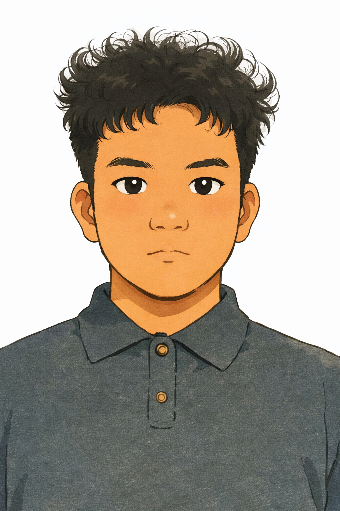

About
I work on embodied robotic manipulation, with a focus on underactuated grippers, lightweight mechanisms, visuotactile sensing, and physically verifiable prototypes. My recent work includes Gamma grippers for thin-object scooping and adaptive grasping, TPL / LTO grippers for constrained-space industrial manipulation, and a GelSight-based dexterous-hand validation platform.
Publications
- Qu S., Zhang W. A Novel Robot Gripper with Scott Linkage for Scooping and Self-Adaptive Grasp. ICCAS 2025. DOI: 10.23919/ICCAS66577.2025.11301297 [PDF]
- Qu S., Zhang W., Zhang C. The TPL-Lambda Gripper: A Tendon-Driven Manipulator for Combined Pinching and Lifting Based on the Scott Linkage. RAAI 2025. DOI: 10.1109/RAAI67517.2025.11423389 [PDF]
- Qu S., Zhang W., Zhang C. A Novel Underactuated Robot Gripper With Scott-Russell Linkages for Adaptive Grasp in Environmental Constraints. ROBIO 2025. DOI: 10.1109/ROBIO66223.2025.11377469 [PDF]
- Qu S., Zhang W. A Novel Robot Gripper with Scott Linkage for Scooping and Self-Adaptive Grasp in Environmental Constraints. ICIA 2025. DOI: 10.1109/ICIA64617.2025.11277636 [PDF]
Research and Projects
Gamma Series GrippersScott-Russell and parallelogram mechanisms for thin-object pinching, scooping, and enveloping. Reported 94% asymmetric aluminum-foil scooping success and 98% daily-object grasping success.
TPL / LTO Constrained-Space GrippersTendon-driven grippers for combined pinching and lifting, designed for grooved motors, inserted bolts, and post-grasp extraction in constrained environments.
GelSight Dexterous-Hand PlatformSix-axis-arm-to-single-finger six-DOF validation platform with GelSight-based visuotactile reconstruction and force-control development.
Embodied Dexterous-Hand ProjectProvincial undergraduate innovation project on multimodal dexterous-hand design and autonomous operation.
Honors
- ASME Student Mechanism and Robot Design Competition, Gold Medal, 1st Place Internationally, Team Leader, 2025.
Skills
Python, C/C++, MATLAB, Java; SolidWorks, mechanism design, electronic control, MuJoCo, ROS/RViz, robotic arm design, inverse kinematics; multi-agent reinforcement learning, Ray distributed training, RAG applications, YOLO, DeerFlow, RAGFlow; Linux, Docker, VS Code, Anaconda.